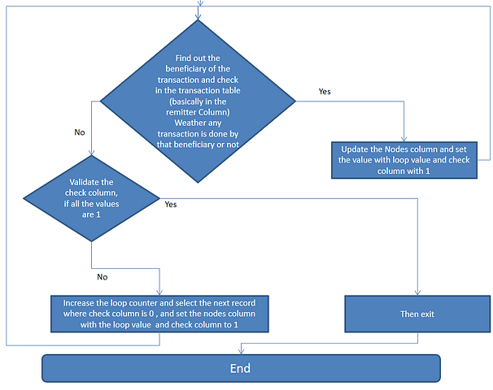

Fraud Transaction Flow Analysis
Tracing end-to-end money laundering paths and intermediary accounts using SAS Data Studio & Sankey diagrams.
SAS AML
SAS Data Studio
Financial Crime
Data Mart Creation
The Challenge
In financial crime compliance, bad actors frequently obscure funds by routing money through rapid, multi-layered chains of intermediary accounts. The objective was to trace complex, multi-hop transaction flows starting from identified primary suspicious accounts across specific date windows.

Figure 1: Initial transaction logging and account mapping.
Solution & Methodology
To establish full transparency across high-risk transaction flows, we implemented an end-to-end analytical pipeline:
- Targeted Ingestion: Queried core enterprise Data Warehouses filtered dynamically by Customer Identification Numbers and precise transaction date ranges.
- Data Hygiene & Validation: Ran automated data quality checks in SAS to eliminate duplicate records, reconcile currency mismatches, and flag missing account metadata.
- Data Mart Engineering: Constructed a dedicated high-performance Data Mart using SAS Data Studio optimized for graph and flow queries.
- Flow Visualization: Built interactive Sankey Diagrams mapping source, intermediary, and ultimate destination accounts across multiple layers of movement.

Figure 2: Multi-layer Sankey diagram revealing illicit money flow routes.
Business Impact & Key Outcomes
- Enhanced Investigator Efficiency: Reduced manual investigation time per suspicious transaction bundle by over 60%.
- Hidden Ring Identification: Successfully exposed previously undetected mule account rings operating across disparate branches.
- Regulatory Readiness: Accelerated formal AML SAR (Suspicious Activity Report) filing speed with fully traceable visual evidence chains.